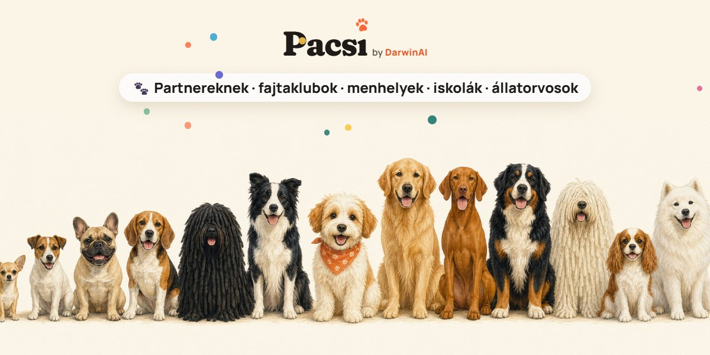

|
|  | Pacsi Partnerlevél · 1. Köszönjük, hogy velünk vagytok!A Pacsi ingyenes, magyar kutyafajta-választó: 124 fajta, szűrők, Párkereső kvíz. Abban segít, hogy a leendő gazdik az életmódjukhoz illő kutyát válasszanak – és ebben ti vagytok a legfontosabb szövetségeseink. | Kedves Anna! Ebben a rövid levélben három dolgot kaptok: kész anyagot, amit megoszthattok a tagjaitokkal, egy kérést, amihez a szakértelmetekre számítunk, és egy linket, amellyel a tagjaitok is feliratkozhatnak a heti Pacsi-levélre. | Kész anyag a csatornáitokra Posztszöveg a Facebook-oldalatokra vagy a hírlevélbeNyugodtan írjátok át a saját hangotokra. | Kutyát szeretnél, de nem tudod, melyik fajta illik hozzád? 🐾 Próbáld ki a Pacsit: ingyenes, magyar kutyafajta-választó 124 fajtával. Szűrj a saját életedre (lakás, gyerek, mozgás, ugatás), vagy töltsd ki a 10 kérdéses Párkereső kvízt. Regisztráció nélkül: https://pacsit.hu |
A képet jobb kattintással menthetitek, vagy írjatok, és elküldjük nagy felbontásban. Ha kéritek, saját követhető linket is adunk, így látjátok, hány embert hoztatok. |
| Egy kérés Nézzétek át a fajtátok kártyáját!A fajtaleírások és a jellemző-pontszámok forrásokból, AI-segítséggel készültek – de a fajtákat ti ismeritek a legjobban. Ha nyitottak vagytok rá, nézzétek meg a számotokra fontos fajták kártyáit, és írjátok meg, ha valamit pontosítanátok. A javításokat a következő frissítésben átvezetjük. | A tagjaitoknak Heti Pacsi-levél, csütörtökönkéntFajtaajánló, gazdi-tippek és egy kis fejtörő, hetente egyszer. Ha szívesen ajánlanátok, ez a feliratkozó link: feliratkozás a Pacsi-levélre. |
| Pacsi-pacsi, a Pacsi csapata U.i. Kérdésetek vagy ötletetek van? Egyszerűen válaszoljatok erre a levélre. |
| |
|
Pacsi by DarwinAI Ingyenes kutyafajta-választó 124 fajtával · pacsit.hu Azért kapod ezt a levelet, mert feliratkoztál a Pacsi heti kutyás levelére a pacsit.hu-n, vagy partnerként kérted.
Beállítások módosítása · Leiratkozás ARworks Kft. · 1012, Budapest, Várfok utca 3-5. |
|